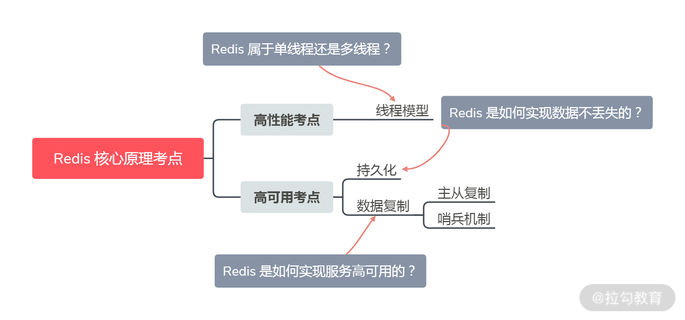
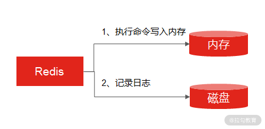
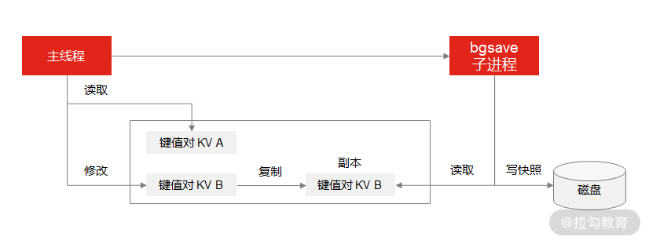
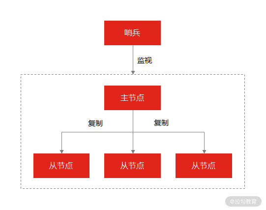
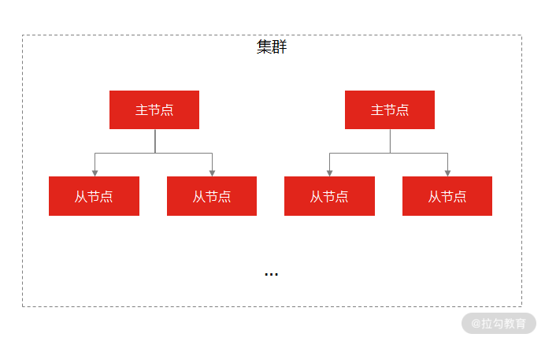
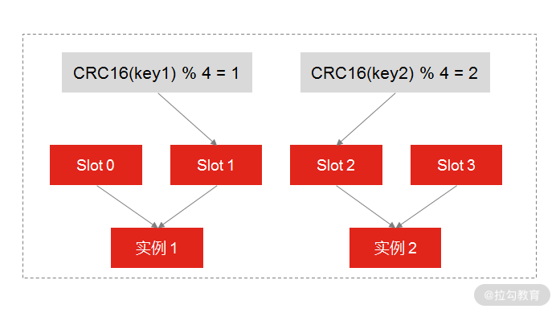

- 00 开篇词 中高级研发面试，逃不开架构设计这一环.md.html
- 01 研发工程师想提升面试竞争力，该具备这三个技术认知.md.html
- 02 研发工程师如何用架构师视角回答架构设计方案？.md.html
- 03 面试官如何考察与 CAP 有关的分布式理论？.md.html
- 04 亿级商品存储下，如何深度回答分布式系统的原理性问题？.md.html
- 05 海量并发场景下，如何回答分布式事务一致性问题？.md.html
- 06 分布式系统中，如何回答锁的实现原理？.md.html
- 07 RPC：如何在面试中展现出“造轮子”的能力？.md.html
- 08 MQ：如何回答消息队列的丢失、重复与积压问题.md.html
- 08 案例串联 如何让系统抗住双十一的预约抢购活动？.md.html
- 09 如何回答 MySQL 的索引原理与优化问题？.md.html
- 10 如何回答 MySQL 的事务隔离级别和锁的机制？.md.html
- 11 读多写少：MySQL 如何优化数据查询方案？.md.html
- 12 写多读少：MySQL 如何优化数据存储方案？.md.html
- 13 缓存原理：应对面试你要掌握 Redis 哪些原理？.md.html
- 14 缓存策略：面试中如何回答缓存穿透、雪崩等问题？.md.html
- 15 如何向面试官证明你做的系统是高可用的？.md.html
- 16 如何从架构师角度回答系统容错、降级等高可用问题？.md.html
- 17 如何向面试官证明你做的系统是高性能的？.md.html
- 18 如何从架构师角度回答怎么应对千万级流量的问题？.md.html
- 19 彩蛋 互联网架构设计面试，你需要掌握的知识体系.md.html
- 结束语 程序员的道、术、势.md.html
13 缓存原理：应对面试你要掌握 Redis 哪些原理？
这一讲我们聊一聊与 Redis 有关的话题。
提及缓存，就不得不提 Redis，Redis 已经是现在使用最广泛的缓存中间件了，这一讲，我以 Redis 的原理为切入点，带你了解在面试过程中那些与 Redis 原理有关的题目，帮你捋清答题思路，抓住重点。
案例背景
我们现在就模拟一场面试，假如我是面试官，你是候选人，我问你：
Redis 属于单线程还是多线程？
这道题其实就在考察 Redis 的线程模型（这几乎是 Redis 必问的问题之一）。
案例分析
很多初级研发工程师基本都知道 Redis 是单线程的，并且能说出 Redis 单线程的一些优缺点，比如，实现简单，可以在无锁的情况下完成所有操作，不存在死锁和线程切换带来的性能和时间上的开销，但同时单线程也不能发挥多核 CPU 的性能。
很明显，如果你停留在上面的回答思路上，只能勉强及格，因为对于这样一道经典的面试题，你回答得没有亮点，几乎丧失了机会。一个相对完整的思路应该基于 Redis 单线程，补充相关的知识点，比如：
- Redis 只有单线程吗？
Redis 是单线程的，主要是指 Redis 的网络 I/O 线程，以及键值的 SET 和 GET 等读写操作都是由一个线程来完成的。但 Redis 的持久化、集群同步等操作，则是由另外的线程来执行的。
- Redis 采用单线程为什么还这么快？
一般来说，单线程的处理能力应该要比多线程差才对，但为什么 Redis 还能达到每秒数万级的处理能力呢？主要有如下几个原因。
首先，一个重要的原因是，Redis 的大部分操作都在内存中完成，并且采用了高效的数据结构，比如哈希表和跳表。
其次，因为是单线程模型避免了多线程之间的竞争，省去了多线程切换带来的时间和性能上的开销，而且也不会导致死锁问题。
最后，也是最重要的一点， Redis 采用了 I/O 多路复用机制（参考 07 讲，这里不再赘述）处理大量的客户端 Socket 请求，这让 Redis 可以高效地进行网络通信，因为基于非阻塞的 I/O 模型，就意味着 I/O 的读写流程不再阻塞。
但是因为 Redis 不同版本的特殊性，所以对于 Redis 的线程模型要分版本来看。
Redis 4.0 版本之前，使用单线程速度快的原因就是上述的几个原因；
Redis 4.0 版本之后，Redis 添加了多线程的支持，但这时的多线程主要体现在大数据的异步删除功能上，例如 unlink key、flushdb async、flushall async 等。
Redis 6.0 版本之后，为了更好地提高 Redis 的性能，新增了多线程 I/O 的读写并发能力，但是在面试中，能把 Redis 6.0 中的多线程模型回答上来的人很少，如果你能在面试中补充 Redis 6.0 多线程的原理，势必会增加面试官对你的认可。
你可以在面试中这样补充：
虽然 Redis 一直是单线程模型，但是在 Redis 6.0 版本之后，也采用了多个 I/O 线程来处理网络请求，这是因为随着网络硬件的性能提升，Redis 的性能瓶颈有时会出现在网络 I/O 的处理上，所以为了提高网络请求处理的并行度，Redis 6.0 对于网络请求采用多线程来处理。但是对于读写命令，Redis 仍然使用单线程来处理。
当然了， “Redis 的线程模型”只是 Redis 原理中的一个考点，如果你想做足准备，回答好 Redis 相关的问题，还需前提掌握 Redis 的主线知识点。我从高性能、高可用的角度出发，把 Redis 的核心原理考点梳理成一张图（之所以整理这样的体系结构，是因为你最容易在以下的考点中出错、踩坑，也是为了便于你的记忆）：

Redis 高性能和高可用的核心考点
从图中，你可以看到，线程模型只是高性能考点中的一环，而高可用考点中，包括了持久化、数据复制（主从复制，哨兵复制）等内容。所以在讲完 Redis 的线程模型的考点之后，接下来咱们再来了解持久化和数据复制的考点。
关于持久化和数据复制，面试官不会问得很直白，比如“Redis 的持久化是怎么做的？”而是立足在某一个问题点：
- Redis 是如何实现数据不丢失的（考察持久化）？
- Redis 是如何实现服务高可用的（考察数据复制）？
案例解答
Redis 如何实现数据不丢失？
我们知道，缓存数据库的读写都是在内存中，所以它的性能才会高，但在内存中的数据会随着服务器的重启而丢失，为了保证数据不丢失，要把内存中的数据存储到磁盘，以便缓存服务器重启之后，还能够从磁盘中恢复原有的数据，这个过程就是 Redis 的数据持久化。
这也是 Redis 区别于其他缓存数据库的优点之一（比如 Memcached 就不具备持久化功能）。Redis 的数据持久化有三种方式。
- AOF 日志（Append Only File，文件追加方式）：记录所有的操作命令，并以文本的形式追加到文件中。
- RDB 快照（Redis DataBase）：将某一个时刻的内存数据，以二进制的方式写入磁盘。
- 混合持久化方式：Redis 4.0 新增了混合持久化的方式，集成了 RDB 和 AOF 的优点。
接下来我们看一下这三种方式的实现原理。
AOF 日志是如何实现的？
通常情况下，关系型数据库（如 MySQL）的日志都是“写前日志”（Write Ahead Log, WAL），也就是说，在实际写数据之前，先把修改的数据记到日志文件中，以便当出现故障时进行恢复，比如 MySQL 的 redo log（重做日志），记录的就是修改后的数据。
而 AOF 里记录的是 Redis 收到的每一条命令，这些命令是以文本形式保存的，不同的是，Redis 的 AOF 日志的记录顺序与传统关系型数据库正好相反，它是写后日志，“写后”是指 Redis 要先执行命令，把数据写入内存，然后再记录日志到文件。

AOF 执行过程
那么面试的考察点来了：Reids 为什么先执行命令，在把数据写入日志呢？为了方便你理解，我整理了关键的记忆点：
- 因为 ，Redis 在写入日志之前，不对命令进行语法检查；
- 所以，只记录执行成功的命令，避免了出现记录错误命令的情况；
- 并且，在命令执行完之后再记录，不会阻塞当前的写操作。
当然，这样做也会带来风险（这一点你也要在面试中给出解释）。
- 数据可能会丢失： 如果 Redis 刚执行完命令，此时发生故障宕机，会导致这条命令存在丢失的风险。
- 可能阻塞其他操作： 虽然 AOF 是写后日志，避免阻塞当前命令的执行，但因为 AOF 日志也是在主线程中执行，所以当 Redis 把日志文件写入磁盘的时候，还是会阻塞后续的操作无法执行。
又因为 Redis 的持久化离不开 AOF 和 RDB，所以我们就需要学习 RDB。
那么 RDB 快照是如何实现的呢？
因为 AOF 日志记录的是操作命令，不是实际的数据，所以用 AOF 方法做故障恢复时，需要全量把日志都执行一遍，一旦日志非常多，势必会造成 Redis 的恢复操作缓慢。
为了解决这个问题，Redis 增加了 RDB 内存快照（所谓内存快照，就是将内存中的某一时刻状态以数据的形式记录在磁盘中）的操作，它即可以保证可靠性，又能在宕机时实现快速恢复。
和 AOF 不同的是，RDB 记录 Redis 某一时刻的数据，而不是操作，所以在做数据恢复时候，只需要直接把 RDB 文件读入内存，完成快速恢复。
以上是 RDB 的主要原理，这里存在两个考点。
- RDB 做快照时会阻塞线程吗？
因为 Redis 的单线程模型决定了它所有操作都要尽量避免阻塞主线程，所以对于 RDB 快照也不例外，这关系到是否会降低 Redis 的性能。
为了解决这个问题，Redis 提供了两个命令来生成 RDB 快照文件，分别是 save 和 bgsave。save 命令在主线程中执行，会导致阻塞。而 bgsave 命令则会创建一个子进程，用于写入 RDB 文件的操作，避免了对主线程的阻塞，这也是 Redis RDB 的默认配置。
- RDB 做快照的时候数据能修改吗？
这个问题非常重要，考察候选人对 RDB 的技术掌握得够不够深。你可以思考一下，如果在执行快照的过程中，数据如果能被修改或者不能被修改都会带来什么影响？
- 如果此时可以执行写操作：意味着 Redis 还能正常处理写操作，就可能出现正在执行快照的数据是已经被修改了的情况；
- 如果此时不可以执行写操作：意味着 Redis 的所有写操作都得等到快照执行完成之后才能执行，那么就又出现了阻塞主线程的问题。
那Redis 是如何解决这个问题的呢？ 它利用了 bgsave 的子进程，具体操作如下：
- 如果主线程执行读操作，则主线程和 bgsave 子进程互相不影响；
- 如果主线程执行写操作，则被修改的数据会复制一份副本，然后 bgsave 子进程会把该副本数据写入 RDB 文件，在这个过程中，主线程仍然可以直接修改原来的数据。

Redis 是如何保证执行快照期间数据可修改
要注意，Redis 对 RDB 的执行频率非常重要，因为这会影响快照数据的完整性以及 Redis 的稳定性，所以在 Redis 4.0 后，增加了 AOF 和 RDB 混合的数据持久化机制： 把数据以 RDB 的方式写入文件，再将后续的操作命令以 AOF 的格式存入文件，既保证了 Redis 重启速度，又降低数据丢失风险。
我们来总结一下，当面试官问你“Redis 是如何实现数据不丢失的”时，你首先要意识到这是在考察你对 Redis 数据持久化知识的掌握程度，那么你的回答思路是：先说明 Redis 有几种持久化的方式，然后分析 AOF 和 RDB 的原理以及存在的问题，最后分析一下 Redis 4.0 版本之后的持久化机制。
Redis 如何实现服务高可用？
另外，Redis 不仅仅可以用来当作缓存，很多时候也会直接作为数据存储，那么你就要一个高可用的 Redis 服务，来支撑和保证业务的正常运行。那么你怎么设计一个不宕机的 Redis 高可用服务呢？
思考一下，解决数据高可用的手段是什么？是副本。那么要想设计一个高可用的 Redis 服务，一定要从 Redis 的多服务节点来考虑，比如 Redis 的主从复制、哨兵模式，以及 Redis 集群。这三点是你一定要在面试中回答出来的。
- 主从同步 (主从复制)
这是 Redis 高可用服务的最基础的保证，实现方案就是将从前的一台 Redis 服务器，同步数据到多台从 Redis 服务器上，即一主多从的模式，这样我们就可以对 Redis 做读写分离了，来承载更多的并发操作，这里和 MySQL 的主从复制原理上是一样的。
- Redis Sentinel（哨兵模式）
在使用 Redis 主从服务的时候，会有一个问题，就是当 Redis 的主从服务器出现故障宕机时，需要手动进行恢复，为了解决这个问题，Redis 增加了哨兵模式（因为哨兵模式做到了可以监控主从服务器，并且提供自动容灾恢复的功能）。

哨兵模式
- Redis Cluster（集群）
Redis Cluster 是一种分布式去中心化的运行模式，是在 Redis 3.0 版本中推出的 Redis 集群方案，它将数据分布在不同的服务器上，以此来降低系统对单主节点的依赖，从而提高 Redis 服务的读写性能。

集群
Redis Cluster 方案采用哈希槽（Hash Slot），来处理数据和实例之间的映射关系。在 Redis Cluster 方案中，一个切片集群共有 16384 个哈希槽，这些哈希槽类似于数据分区，每个键值对都会根据它的 key，被映射到一个哈希槽中，具体执行过程分为两大步。
- 根据键值对的 key，按照 CRC16 算法计算一个 16 bit 的值。
- 再用 16bit 值对 16384 取模，得到 0~16383 范围内的模数，每个模数代表一个相应编号的哈希槽。
剩下的一个问题就是，这些哈希槽怎么被映射到具体的 Redis 实例上的呢？有两种方案。
- 平均分配： 在使用 cluster create 命令创建 Redis 集群时，Redis 会自动把所有哈希槽平均分布到集群实例上。比如集群中有 9 个实例，则每个实例上槽的个数为 16384/9 个。
- 手动分配： 可以使用 cluster meet 命令手动建立实例间的连接，组成集群，再使用 cluster addslots 命令，指定每个实例上的哈希槽个数，为了方便你的理解，我通过一张图来解释数据、哈希槽，以及实例三者的映射分布关系。

Redis 手动分配哈希槽
示意图中的分片集群一共有 3 个实例，假设有 4 个哈希槽时，我们就可以通过命令手动分配哈希槽，比如实例 1 保存哈希槽 0 和 1，实例 2 保存哈希槽 2 和 3。
然后在集群运行的过程中，key1 和 key2 计算完 CRC16 值后，对哈希槽总个数 5 进行取模，再根据各自的模数结果，就可以被映射到对应的实例 1 和实例 3 上了。
我们再来总结一下，主从同步是 Redis 高可用最基础的服务高可用方案，但它当发生故障时，需要手动恢复故障，因此就有了哨兵模式用于监控和实现主从服务器的自动容灾。最后我讲了目前最常用的高可用方案 Redis 集群，这三种高可用方式都是你需要掌握的。
总结
这一讲，我讲了 Redis 的三个核心问题：线程模型、数据持久化，以及高可用，我想强调这样几个重点：
- 对于线程模型的知识点，你要分开三条线进行理解（Redis 4.0 之前、Redis 4.0 之后，以及 Redis 6.0）。
- 对于数据持久化，你要掌握 Redis 持久化的几种方案，AOF 和 RDB 的原理，以及为了弥补他们的缺点，Redis 增加了混合持久化方式，以较小的性能开销保证数据的可靠性。
- 实现高可用的三种手段：主从同步、哨兵模式和 Redis 集群服务，对于 Redis 集群，你要掌握哈希槽的数据分布机制，以及自动分配和手动分配的实现原理 。
最后，我还要强调一下，Redis 是应聘初中级研发工程师必问的知识点，它是目前缓存数据库的代名词，所以对于 Redis 知识点的掌握，无论是在面试过程中，还是在实际的工作中，都是经常要用到的。